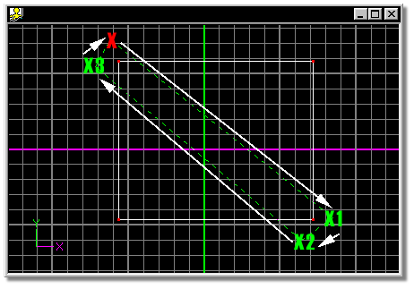
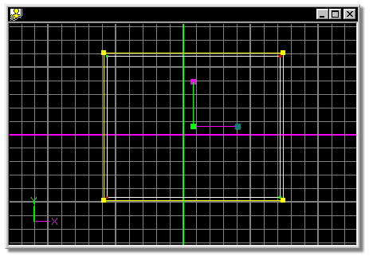

The Lasso Mode enables you to add control points to a group by drawing a
freehand outline around an area.
To start the lasso, click the Lasso Mode button, then click inside the
appropriate window. A line will follow the mouse from the last point, and every time
the mouse is clicked, a new lasso line will form. Enclose the control points to
be added to the group, then click the mouse over the start of the lasso. All
interior control points will turn green (indicating that they are selected), and
a yellow manipulator box will appear around group.
When Lasso Mode is used in this way, any previously selected control points
are removed from the group.
Holding down the <Shift> key and clicking points individually will add or
remove them from the group.
The default keyboard shortcut key for Lasso Mode is <Shift>+G.
To use the lasso to group points, click the Lasso button on the Tool Panel,
then point in the appropriate window near one of the targeted control points and
click the mouse (the Red X). Move the mouse in the direction of the white arrow
(a dashed line will follow), and click to group the desired control points
(Green Xs). Once the lasso contains all of the targeted control points, click
back on the beginning of the lasso (the Red X) to complete the group.

Notice that in the resulting group, the manipulator box sizes to surround the
grouped points. This makes it appear as though all of the points are selected,
when in fact, only the green control points are.
The resulting group:

Related Topics:

Peak
Smooth
Magnitude
Bias
Group Mode